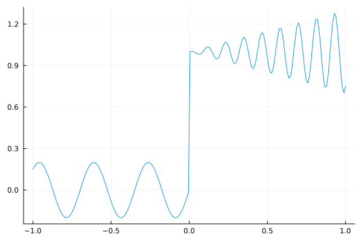
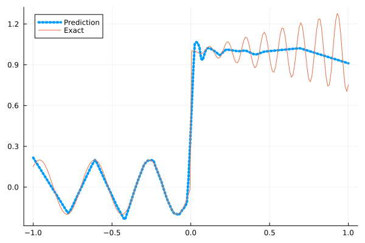
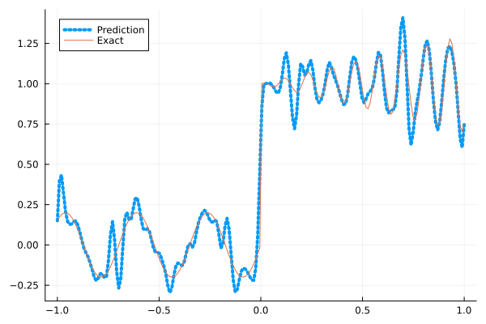
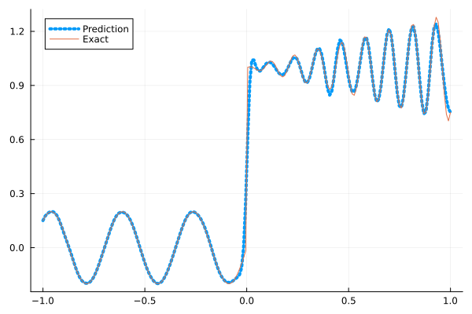
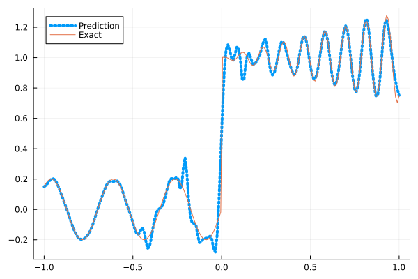
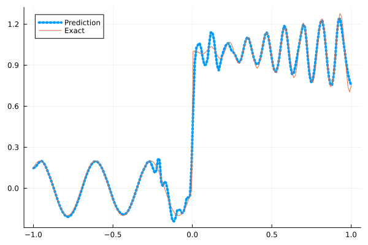

Fitting a nonlinear discontinuous function
This example is taken from here. However, we do not use adaptive activation functions. Instead, we show that using suitable non-parametric activation functions immediately performs better.
Consider the following discontinuous function with discontinuity at $x=0$:
\[u(x)= \begin{cases}0.2 \sin (18 x) & \text { if } x \leq 0 \\ 1+0.3 x \cos (54 x) & \text { otherwise }\end{cases}\]
The domain is $[-1,1]$. The number of training points used is 50.
Import pacakges
using Lux, Sophon
using NNlib, Optimisers, Plots, Random, StatsBase, ZygoteDataset
function u(x)
if x <= 0
return 0.2 * sin(18 * x)
else
return 1 + 0.3 * x * cos(54 * x)
end
end
function generate_data(n=50)
x = reshape(collect(range(-1.0f0, 1.0f0, n)), (1, n))
y = u.(x)
return (x, y)
endgenerate_data (generic function with 2 methods)Let's visualize the data.
x_train, y_train = generate_data(50)
x_test, y_test = generate_data(200)
Plots.plot(vec(x_test), vec(y_test),label=false)
Naive Neural Nets
First we demonstrate show naive fully connected neural nets could be really bad at fitting this function.
model = FullyConnected((1,50,50,50,50,1), relu)Chain(
layer_1 = Dense(1 => 50, relu), # 100 parameters
layer_2 = Dense(50 => 50, relu), # 2_550 parameters
layer_3 = Dense(50 => 50, relu), # 2_550 parameters
layer_4 = Dense(50 => 50, relu), # 2_550 parameters
layer_5 = Dense(50 => 1), # 51 parameters
) # Total: 7_801 parameters,
# plus 0 states, summarysize 80 bytes.Train the model
function train(model, x, y)
ps, st = Lux.setup(Random.default_rng(), model)
opt = Adam()
st_opt = Optimisers.setup(opt,ps)
function loss(model, ps, st, x, y)
y_pred, _ = model(x, ps, st)
mes = mean(abs2, y_pred .- y)
return mes
end
for i in 1:2000
gs = gradient(p->loss(model,p,st,x,y), ps)[1]
st_opt, ps = Optimisers.update(st_opt, ps, gs)
if i % 100 == 1 || i == 2000
println("Epoch $i || ", loss(model,ps,st,x,y))
end
end
return ps, st
endtrain (generic function with 1 method)Plot the result
@time ps, st = train(model, x_train, y_train)
y_pred = model(x_test,ps,st)[1]
Plots.plot(vec(x_test), vec(y_pred),label="Prediction",line = (:dot, 4))
Plots.plot!(vec(x_test), vec(y_test),label="Exact",legend=:topleft)Epoch 1 || 0.3051621160898331
Epoch 101 || 0.017462183388416475
Epoch 201 || 0.015972023759270565
Epoch 301 || 0.015789008826116013
Epoch 401 || 0.01553341683598451
Epoch 501 || 0.01625073967601682
Epoch 601 || 0.013702224873643627
Epoch 701 || 0.012876401757359242
Epoch 801 || 0.012592176341465693
Epoch 901 || 0.012446029209937554
Epoch 1001 || 0.012418887037308085
Epoch 1101 || 0.012370913319326451
Epoch 1201 || 0.012443065910584375
Epoch 1301 || 0.01230258305082025
Epoch 1401 || 0.012259561350096957
Epoch 1501 || 0.011507917544585088
Epoch 1601 || 0.010661983704798969
Epoch 1701 || 0.00961228367416701
Epoch 1801 || 0.008525421802228584
Epoch 1901 || 0.007921802048818165
Epoch 2000 || 0.00774844829557161
9.913705 seconds (13.14 M allocations: 1.482 GiB, 5.82% gc time, 93.33% compilation time)
Siren
We use four hidden layers with 50 neurons in each.
model = Siren(1,50,50,50,50,1; omega = 30f0)Chain(
layer_1 = Dense(1 => 50, sin), # 100 parameters
layer_2 = Dense(50 => 50, sin), # 2_550 parameters
layer_3 = Dense(50 => 50, sin), # 2_550 parameters
layer_4 = Dense(50 => 50, sin), # 2_550 parameters
layer_5 = Dense(50 => 1), # 51 parameters
) # Total: 7_801 parameters,
# plus 0 states, summarysize 88 bytes.@time ps, st = train(model, x_train, y_train)
y_pred = model(x_test,ps,st)[1]
Plots.plot(vec(x_test), vec(y_pred),label="Prediction",line = (:dot, 4))
Plots.plot!(vec(x_test), vec(y_test),label="Exact",legend=:topleft)Epoch 1 || 0.9031420247888241
Epoch 101 || 0.0008974697322853008
Epoch 201 || 5.374194412061108e-5
Epoch 301 || 3.6860643789336128e-6
Epoch 401 || 2.860754465202639e-7
Epoch 501 || 1.876584786172225e-8
Epoch 601 || 8.512859644364898e-10
Epoch 701 || 2.8798291072521334e-11
Epoch 801 || 1.7569896613584665e-12
Epoch 901 || 2.1167200651602005e-13
Epoch 1001 || 1.0320420647888949e-13
Epoch 1101 || 3.5957632987266064e-14
Epoch 1201 || 4.264182750683005e-14
Epoch 1301 || 6.809931096525314e-14
Epoch 1401 || 8.350794420547278e-14
Epoch 1501 || 7.870737113866955e-14
Epoch 1601 || 8.607380598562532e-14
Epoch 1701 || 5.698241558652727e-14
Epoch 1801 || 7.256821917083864e-14
Epoch 1901 || 1.6461234647597584e-13
Epoch 2000 || 1.16293727028814e-13
5.186045 seconds (8.16 M allocations: 1.298 GiB, 7.01% gc time, 83.41% compilation time)
As we can see the model overfits the data, and the high frequencies cannot be optimized away. We need to tunning the hyperparameter omega
model = Siren(1,50,50,50,50,1; omega = 10f0)Chain(
layer_1 = Dense(1 => 50, sin), # 100 parameters
layer_2 = Dense(50 => 50, sin), # 2_550 parameters
layer_3 = Dense(50 => 50, sin), # 2_550 parameters
layer_4 = Dense(50 => 50, sin), # 2_550 parameters
layer_5 = Dense(50 => 1), # 51 parameters
) # Total: 7_801 parameters,
# plus 0 states, summarysize 88 bytes.@time ps, st = train(model, x_train, y_train)
y_pred = model(x_test,ps,st)[1]
Plots.plot(vec(x_test), vec(y_pred),label="Prediction",line = (:dot, 4))
Plots.plot!(vec(x_test), vec(y_test),label="Exact",legend=:topleft)Epoch 1 || 0.7744607209254397
Epoch 101 || 0.0069128847636183086
Epoch 201 || 0.005524546893289675
Epoch 301 || 0.004830291290768431
Epoch 401 || 0.003956754636074342
Epoch 501 || 0.002914949130639446
Epoch 601 || 0.002082112296131089
Epoch 701 || 0.0015189250744871657
Epoch 801 || 0.001026027667170501
Epoch 901 || 0.0005999323509289239
Epoch 1001 || 0.0003028965316436142
Epoch 1101 || 0.00014240126783679683
Epoch 1201 || 7.146203228506241e-5
Epoch 1301 || 4.331454645224858e-5
Epoch 1401 || 3.181568800942962e-5
Epoch 1501 || 2.6105391754816648e-5
Epoch 1601 || 2.2395592266790856e-5
Epoch 1701 || 1.972804594415011e-5
Epoch 1801 || 1.7202523825715618e-5
Epoch 1901 || 1.5006954969727338e-5
Epoch 2000 || 1.40635369163583e-5
0.766786 seconds (1.15 M allocations: 892.451 MiB, 9.75% gc time)
Gaussian activation function
We can also try using a fully connected net with the gaussian activation function.
model = FullyConnected((1,50,50,50,50,1), gaussian)Chain(
layer_1 = Dense(1 => 50, gaussian), # 100 parameters
layer_2 = Dense(50 => 50, gaussian), # 2_550 parameters
layer_3 = Dense(50 => 50, gaussian), # 2_550 parameters
layer_4 = Dense(50 => 50, gaussian), # 2_550 parameters
layer_5 = Dense(50 => 1), # 51 parameters
) # Total: 7_801 parameters,
# plus 0 states, summarysize 80 bytes.@time ps, st = train(model, x_train, y_train)
y_pred = model(x_test,ps,st)[1]
Plots.plot(vec(x_test), vec(y_pred),label="Prediction",line = (:dot, 4))
Plots.plot!(vec(x_test), vec(y_test),label="Exact",legend=:topleft)Epoch 1 || 0.5097455403797749
Epoch 101 || 0.005267446435002199
Epoch 201 || 0.004579081195372688
Epoch 301 || 0.004021118246285267
Epoch 401 || 0.002109238303515777
Epoch 501 || 1.1902012772153873e-5
Epoch 601 || 1.7840213329375913e-8
Epoch 701 || 3.4373624758367317e-7
Epoch 801 || 4.22732692401153e-12
Epoch 901 || 4.346082044934493e-13
Epoch 1001 || 5.133656501416133e-7
Epoch 1101 || 1.6291626798717115e-11
Epoch 1201 || 9.185618439128009e-14
Epoch 1301 || 1.0183765162548276e-13
Epoch 1401 || 1.3110641300584105e-13
Epoch 1501 || 6.861783019479638e-13
Epoch 1601 || 2.207403660451603e-5
Epoch 1701 || 4.478423783049019e-10
Epoch 1801 || 8.390808739520674e-7
Epoch 1901 || 5.2228255518272234e-11
Epoch 2000 || 1.941546063012805e-13
4.899709 seconds (7.29 M allocations: 1.252 GiB, 6.62% gc time, 80.50% compilation time)
Quadratic activation function
quadratic is much cheaper to compute compared to the Gaussain activation function.
model = FullyConnected((1,50,50,50,50,1), quadratic)Chain(
layer_1 = Dense(1 => 50, quadratic), # 100 parameters
layer_2 = Dense(50 => 50, quadratic), # 2_550 parameters
layer_3 = Dense(50 => 50, quadratic), # 2_550 parameters
layer_4 = Dense(50 => 50, quadratic), # 2_550 parameters
layer_5 = Dense(50 => 1), # 51 parameters
) # Total: 7_801 parameters,
# plus 0 states, summarysize 80 bytes.@time ps, st = train(model, x_train, y_train)
y_pred = model(x_test,ps,st)[1]
Plots.plot(vec(x_test), vec(y_pred),label="Prediction",line = (:dot, 4))
Plots.plot!(vec(x_test), vec(y_test),label="Exact",legend=:topleft)Epoch 1 || 0.2997593238392644
Epoch 101 || 0.0061444671018011125
Epoch 201 || 0.005386042530512583
Epoch 301 || 0.00462933558011822
Epoch 401 || 0.003883694366906048
Epoch 501 || 0.0029013943779476665
Epoch 601 || 0.0015112199600203233
Epoch 701 || 0.00018077684089590662
Epoch 801 || 1.5150324617241273e-5
Epoch 901 || 6.719434403209353e-6
Epoch 1001 || 1.5597848264440294e-5
Epoch 1101 || 5.34463570332277e-5
Epoch 1201 || 1.585582197283723e-7
Epoch 1301 || 1.3492271387776318e-7
Epoch 1401 || 6.843688642874372e-7
Epoch 1501 || 7.163054798889381e-7
Epoch 1601 || 1.7332592306542325e-6
Epoch 1701 || 5.932483553442466e-5
Epoch 1801 || 7.821092029308621e-8
Epoch 1901 || 2.8063518559088094e-5
Epoch 2000 || 5.987651747937579e-5
4.392999 seconds (7.04 M allocations: 1.235 GiB, 6.31% gc time, 86.38% compilation time)
Conclusion
"Neural networks suppresse high frequency components" is a misinterpretation of the spectral bias. The accurate way of putting it is that the lower frequencies in the error are optimized first in the optimization process. This can be seen in Siren's example of overfitting data, where you do not have implicit regularization. The high frequency in the network will never go away because it has fitted the data perfectly.
Mainstream attributes the phenomenon that neural networks "suppress" high frequencies to gradient descent. This is not the whole picture. Initialization also plays an important role. Siren mitigats this problem by initializing larger weights in the first layer, while activation functions such as gassian have large enough gradients and sufficiently large support of the second derivative with proper hyperparameters. Please refer to Vincent Sitzmann, Julien Martel, Alexander Bergman, David Lindell, Gordon Wetzstein (2020), Sameera Ramasinghe, Simon Lucey (2021) and Sameera Ramasinghe, Lachlan MacDonald, Simon Lucey (2022) if you want to dive deeper into this.